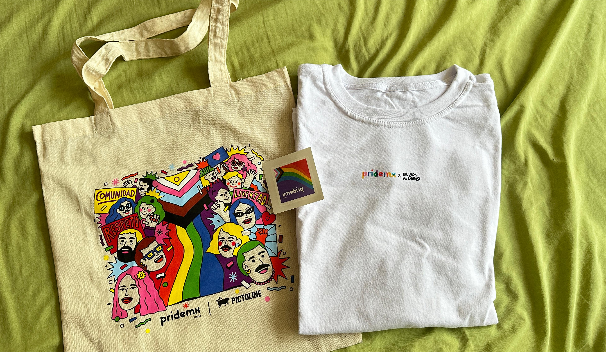

“NO IMPORTAN LAS ETIQUETAS YO NACI DE ESTA MANERA”
Tuve el honor de que PRIDEMX me invitara a un evento que celebró la diversidad y el empoderamiento de la comunidad LGBTQ+ en Antisocial Rooftop. Un brunch exclusivo, donde personalidades destacadas de la comunidad se reunieron para compartir experiencias, reflexionar sobre avances y desafíos, y por supuesto, para disfrutar de un ambiente lleno de alegría y apoyo mutuo.
El objetivo de estas reuniones es crear un espacio seguro, para generar conversaciones y a su vez : Aportaciones y altruismo. Porque somos un conjunto de letras (LGBTQ+) que a veces carecemos de derechos sin perder el sentido de las obligaciones.
PRIDE MX busca generar con los promotores el “ SI “ para trabajar, colaborar, y fomentar un entorno inclusivo, innovador y de crecimiento mutuo. La idea es construir alianzas sólidas, que permitan impulsar proyectos y actividades que beneficien a todos los involucrados y a la comunidad.
“PRIDEMX ES UNA LUCHA CONSTANTE ENTRE EL PODER Y EL QUERER”
Por ello uno de los momentos más esperados fue la presentación de la nueva BOLETERA. Esta iniciativa promueve un espacio seguro y accesible para todos. La boletera es un símbolo de empoderamiento y visibilidad para quienes históricamente han sido marginados dentro de la misma comunidad.
PRIDEMX es una iniciativa de RED COMPANIES que nació en junio de 2022 con un objetivo: visibilizar y fortalecer la comunidad LGBTQ+ en México. Una población de más de 5 millones y más de personas, a través de acciones de impacto social y económico.
PRIDEMX ha logrado conectarse con la comunidad y sus aliadxs a través de dos canales principales

“PRIDEMX CUENTA CON UNA SOLIDA PRESENCIA EN REDES SOCIALES MÁS DE 75 MIL SEGUIRDORES Y 10 MILLONES DE CUENTAS ALCANZADAS”
- PRIDEMX.COM
- Una comunidad vibrante con más de 37,000 usuarixs registradxs, comprometidos con el desarrollo personal, profesional y económico, el activismo, y el entretenimiento.
- Un espacio relevante para la audiencia joven y activa de la comunidad LGBTQ+ en México, con más del 85% de Ixs usuarixs entre los 20 y 40 años.
- Una plataforma inclusiva con secciones dedicadas a Economía Incluyente y Comunidad Solidaria, que han impulsado la bolsa de trabajo de las marcas LGBTQ+ friendly más reconocidas del país y permiten realizar donativos a asociaciones y fundaciones en pro de la comunidad, respectivamente.
-
PRIDEMX. TICKETS
- La primera boletera en su tipo, creada en febrero de 2024 para albergar y promover la oferta de eventos para y por la comunidad LGBTQ+, fortaleciendo el trabajo de artistas, promotorxs, productorxs y proveedorxs de servicios pertenecientes al colectivo.
- Desde su lanzamiento, ha superado los 45,000 boletos vendidos, logrando integrar a su oferta a las marcas más icónicas de entretenimiento en México.
- En sus primeros 8 meses, ha albergado más de 70 eventos de diferentes categorías como fiestas y eventos, artes escénicas, conciertos, deporte, educación y altruismo, en las principales capitales del país: Ciudad de México, Guadalajara y Monterrey.
PRIDETALKS : El podcast de la comunidad
Este podcast es conducido por Diana Espinosa o mejor conocida como @lamasdeskrada, una de las voces más influyentes de la comunidad en la actualidad y directora de @SOMOS_PRIDEMX. En cada episodio, Diana invita a activistas, creadores y líderes de opinión para compartir conversaciones sobre temas que son de gran interés y relevancia para la comunidad LGBTQ+.
En estos dos años, esta iniciativa ha logrado formar valiosas alianzas con organizaciones, medios y marcas como la Conferencia Interamericana de Seguridad Social, Fundación Ser Humano, VIHve Libre, Lleca, Pinterest, Canal 11, Ojo de Tigre, Hoteles Mx, Walmart de México y Centroamérica, Danone, entre otras. Gracias a estas colaboraciones, seguimos trabajando para crear un entorno donde la diversidad se celebre como una fuerza que enriquece y transforma a la sociedad.
Este brunch no solo fue una oportunidad para disfrutar de un buen momento, sino también para reafirmar el compromiso con la lucha por los derechos y la visibilidad de la comunidad LGBTQ+. Un evento que deja huella y demuestra que, aunque el camino sigue siendo largo, juntos seguimos haciendo historia.